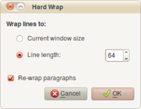

When you are reading a document in preview and see something to change, it is convenient to go immediately to the corresponding place in the source. To do that, hold down Ctrl (Mac OS X: ) and click at the appropriate place in the preview window; the cursor will move and highlight the corresponding location in the source window. The same is true in the other direction: Ctrl in the source will highlight the same line in the preview window.1
Special comments, at the very beginning of the files, can be used to manage two other aspects of the compilation.
By default, TEXworks uses the “utf-8” encoding for saving files, but some files could be saved in another encoding. Common ones are “latin1”, which is the dominant encoding on Windows when using western languages, and “Apple Roman” which is dominant on Mac OS.
To set a different encoding for a specific file one can put the following at the beginning of that file:
If we want to compile a file with another programme than the default TEX or LATEX, we put at the beginning of the file:
for example:
Pay attention to this last instruction. You have to use the name of the programme here which should be used for the whole project, as the first encountered programme when starting typesetting is used (which is the one from the sub-document you are in). TEXworks will use that programme, even if another name appears in the main document!
When opening a document which contains a % !TeX program line, the specified programme will become the one to use and its name will appear in the drop down menu in the toolbar; you can, however, override this by selecting a different one from the drop down list, if you want.
In addition, you can set the spell checking language by a similar comment line:
The language codes available on your system are listed in parentheses in Edit →Spelling next to the human-readable name of the language.
To facilitate legibility of the source, one can use indentation as programmers do:
This increases legibility, but works well only on short lines, without text wrapping; or if one chooses not to use text wrapping by unchecking Format →Wrap lines.
The command Format→Indent or the shortcut Ctrl] (Mac OS X: ]) will indent the line, or the selected lines, by inserting a tab character. You can repeat the process to increase the indent.
To remove one level of indentation, use Format→Unindent or the shortcut Ctrl[ ( [ on Mac OS X).2
As indent only indents the first part of very long (wrapped) lines, this is not very satisfactory in some cases. But one can ask TEXworks to split a long line (longer than the width of the editing window) into short ones adding a hard coded line feed. Format→Hard Wrap... opens a dialog box in which you can specify the width of the lines; you can also re-format lines which have already been split.

When a document is becoming long and you want to move to a specific place (a chapter, a section, a subsection, …) you normally need to scroll the editing window to find the desired location, or use the Find dialog if you remember a keyword in the chapter’s title.
To the same end, though a lot more comfortable, you can also use the structural information in the document to navigate the source: the menu item Window→Show→Tags opens a panel showing the information detected by TEXworks. Clicking on an item in the panel moves the cursor to the corresponding part in the source. That panel, like any other, can be resized by dragging its border.
The same action is possible in the PDF window from Window→Show→Table of contents, but this only works if one has created structure tags in the PDF file using the package hyperref.
By default, the editor/source window opens on the left and the preview one on the right (when the corresponding PDF file exists), thus splitting the screen in two.
You can change the position of the windows in the Window menu. →Stack and →Side by side give the default effect if there is only one document open. If not, →Stack creates a mosaic with all the windows. The other options allow to place the windows for your convenience. It is also always possible to resize and move the windows manually, of course.
For the preview you can change the way it is presented and of course the zoom by View→Actual size, →Fit to width and →Fit to window; you can also zoom in and out. Shortcuts exist for all these actions and are shown next to the menu items.
Very soon when one uses (LA)TEX, one discovers that the working folder is cluttered by many files which have the name of the source file but different extensions: .aux, .log, .toc, .lof, .lot, .bbl, …
All these are files needed by (LA)TEX to be able to create the table of contents, lists of figures/tables, the bibliography, the cross references and, also very importantly, to keep track of what it did (in the .log file).
Apart from the external files, images, pictures, …, the only files required are the .tex files, the sources of the document. One can erase all the others. Sometimes, this is even necessary when (LA)TEX gets stuck after an error.
This can be done using a TEXworks command from the File menu: →Remove Aux files ….
When you use this command, a dialog box opens in which you can check/uncheck the files you want to remove.3 The dialog box will only list files that actually exist in the foler; if you removed all these auxiliary files before, you get a message box saying that there is no file to remove at the moment.
The list of auxilliary files which are taken into account is defined in the file texworks-config.txt in the configuration folder of the TEXworks resources folder. You could add some if required.
We have seen in section 2 (on page 11 ) that the first time you use TEXworks, it creates a resource folder and also that it saves default preferences.
It is possible to define a personal place where one wants the resource folder and the preferences. This can be handy when one wants a portable system (e.g., on an USB stick) or when one wants to easily access the templates or completion folders for modifications.
For this, create a file texworks-setup.ini in the programme folder in which you specify the path to the folder containing the completion, configuration, dictionaries,…folders and the configuration file (texworks.ini); there will be two lines:
inipath for the configuration file and libpath for the necessary folders. Here, TW_conf would replace the resource folder TeXworks. Note that the referenced folder (here TW_conf) should exist—it will not be created—, and that the / is used even on Windows (instead of the common \).
If one wants to put the resource folder in the programme folder as a subfolder, one can use an instruction like inipath=./TW_conf/; all relative paths are taken to be relatve to the TEXworks programme folder (on Mac OS X, the folder containing the app package is used).
to specify where the programmes of the TEX distribution are located; but this instruction is not yet completely operational, especially under Windows.